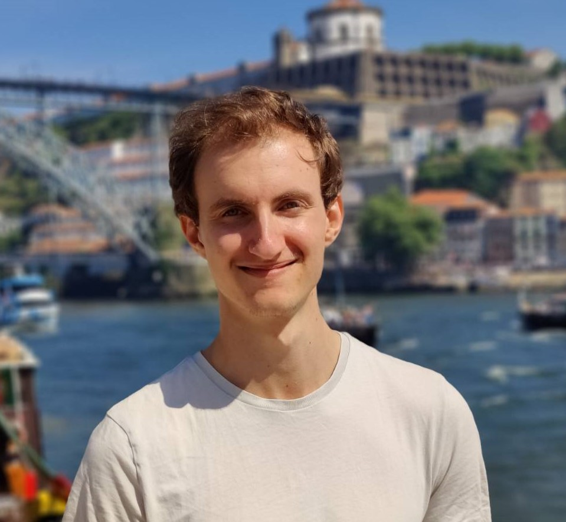
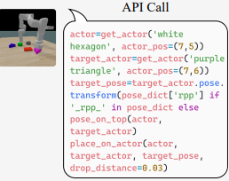
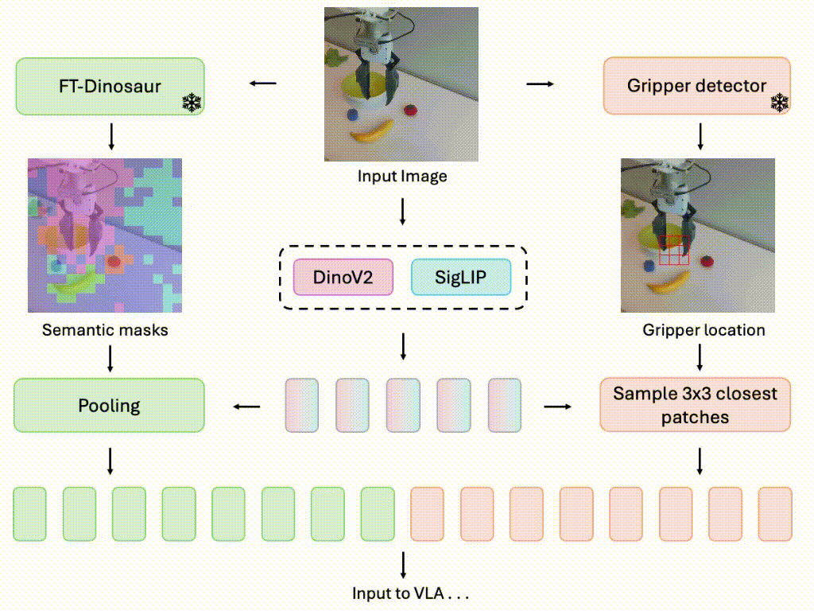

|
Markus Peschl
I am a senior deep learning researcher at Qualcomm AI Research in Amsterdam.
I am dedicated to advancing AI research that is both theoretically rigorous and practically impactful. Previously, I worked on reinforcement learning and at the intersection of deep learning and combinatorial optimization for wireless and chip design problems. Lately, my research focuses on generative models for sequence modeling, decision making, and embodied AI.
In my free time, you can find me playing the pianoüéπ, practicing meditationüßò, reading philosophyüìô and thinking about artificial general intelligence (preferably on the beachüèñÔ∏è).
Email /
Scholar /
LinkedIn /
X
|

|
|

|
From Code to Action: Hierarchical Learning of Diffusion-VLM Policies
Markus Peschl,
Pietro Mazzaglia,
Daniel Dijkman,
CoRL LEAP 2025 (CoRL 2025 Workshop on Learning Effective Abstractions for Planning)
arXiv (soon)
We use VLMs and diffusion policies with API subroutines as structured supervision to improve generalization and long-horizon robotic control.
|
|

|
Focusing on What Matters: Object-Agent-centric Tokenization for Vision Language Action models
Rokas Bendikas,
Daniel Dijkman,
Markus Peschl,
Sanjay Haresh,
Pietro Mazzaglia,
CoRL 2025 (Conference on Robot Learning)
OpenReview
Introducing Oat-VLA: Cut visual tokens for VLAs and train twice as fast as OpenVLA while achieving better real-world performance.
|
|
|
Differentiable and Learnable Wireless Simulation with Geometric Transformers
Thomas Hehn,
Markus Peschl,
Tribhuvanesh Orekondy,
Arash Behboodi,
Johann Brehmer,
ICLR 2025 (International Conference on Learning Representations)
GitHub /
arXiv
A Geometric Algebra Transformer "WiGATr" for learning an E(3) equivariant simulator of wireless signal transmission. We test WiGATr as a predictive model as well as a diffusion model of signal and 3D geometry.
|
|
|
NeuroSteiner: A Graph Transformer for Wirelength Estimation
Sahil Manchanda,
Dana Kianfar,
Markus Peschl,
Romain Lepert,
Michaël Defferrard,
4th AAAI Workshop on AI to Accelerate Science and Engineering
arXiv
Using graph transformers to predict Steiner points in a hybrid fashion to tackle the Steiner Tree problem in physical design (chip design).
|
|
|
Robust scheduling with GFlowNets
David W Zhang,
Corrado Rainone,
Markus Peschl,
Roberto Bondesan,
ICLR 2023 (International Conference on Learning Representations)
OpenReview
/
arXiv
We use GFlowNets to tackle the NP-hard problem of computation graph scheduling by combining a temparature conditioned policy with top-k sampling.
|
|
|
Learning Perturbations for Soft-Output Linear MIMO Demappers
Daniel E. Worrall,
Markus Peschl,
Arash Behboodi,
Roberto Bondesan,
GLOBECOM 2022 (IEEE Global Communications Conference)
IEEE
/
arXiv
We combine lattice reduction, Bayesian optimization and a stochastic sampler to arrive at a highly efficient, yet accurate linear MIMO demapper.
|
|
|
MORAL: Aligning AI with Human Norms through Multi-Objective Reinforced Active Learning
Markus Peschl,
Arkady Zgonnikov,
Frans A Oliehoek,
Luciano C Siebert,
AAMAS 2022 (International Conference on Autonomous Agents and Multiagent Systems)
arXiv
AI alignment is challenging due to a multitude of different and possibly conflicting values present in human feedback. We propose to overcome this challenge with a multi-objective agent that actively learns user preferences.
|
|
{kind=link}